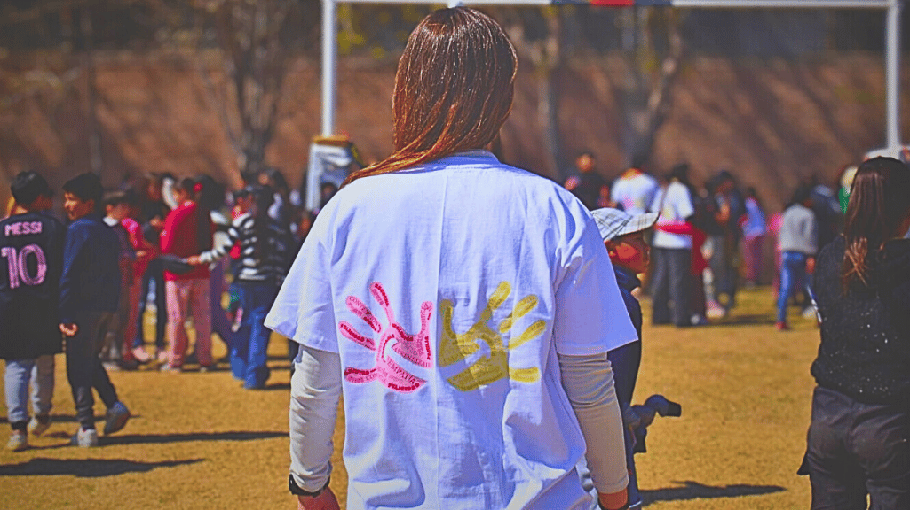
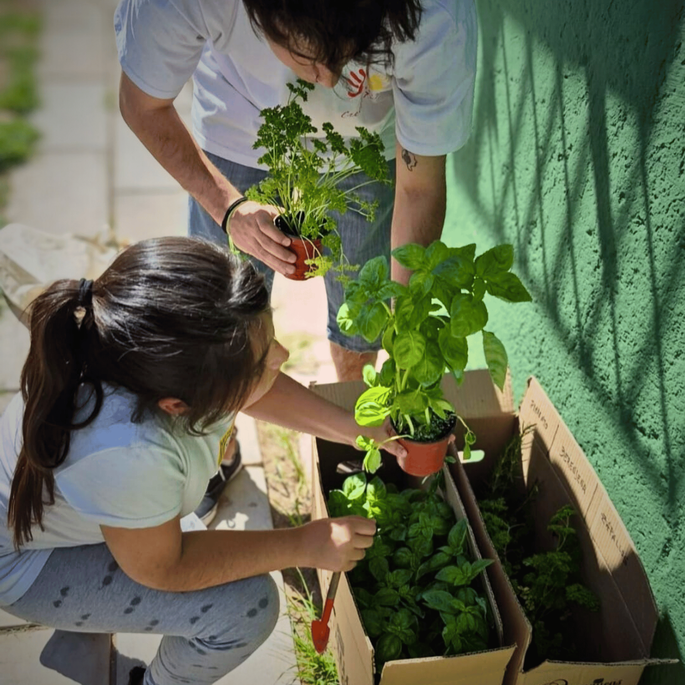

Somos jóvenes comprometidos en transmitir valores y brindar contención a niños y niñas en situación de vulnerabilidad.

Desde 2008, Crecer Felices trabaja en Mendoza con un objetivo claro: acompañar. No somos solo un grupo que va a jugar; somos una red de contención para niños y niñas de 5 a 13 años.
Buscamos suplir carencias afectivas y materiales mediante la transmisión de valores universales. Creemos que un niño escuchado es un niño que puede soñar un futuro diferente.
Visitamos los centros una vez por semana durante 2 horas. Trabajamos valores a través de temáticas como arte, ecología y deporte.
Una vez al año organizamos un evento masivo para más de 300 niños. Magia, juegos, comida rica y sorpresas inolvidables.
Colectas, salidas especiales y actividades puntuales para cubrir necesidades específicas y apoyar a otras instituciones.
"El trabajo más importante del voluntario es darle su tiempo a los chicos. Es el momento en que son escuchados, mirados a los ojos y valorados."
No necesitas ser experto, solo tener ganas de compartir y comprometerte. Buscamos personas que quieran regalar dos horas de su semana.
Completá el formulario de inscripción para que podamos contactarte para la próxima charla.
Llenar Formulario de InscripciónEs rápido y nos ayuda mucho a organizarnos.
Tu aporte nos ayuda a comprar materiales para los talleres, organizar el Día del Niño y garantizar la merienda.
Alias Mercado Pago / Banco
Titular: Asociación Civil Crecer Felices